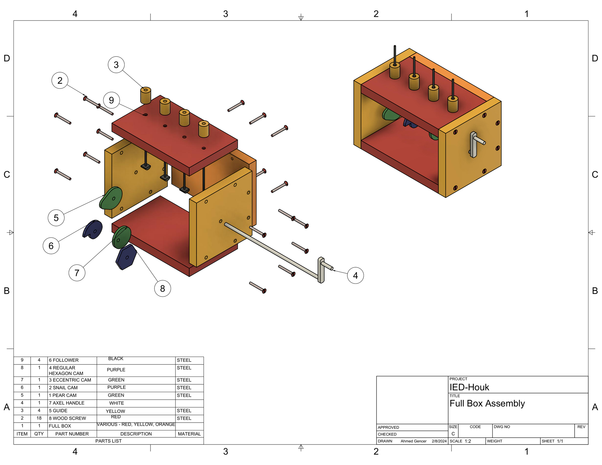
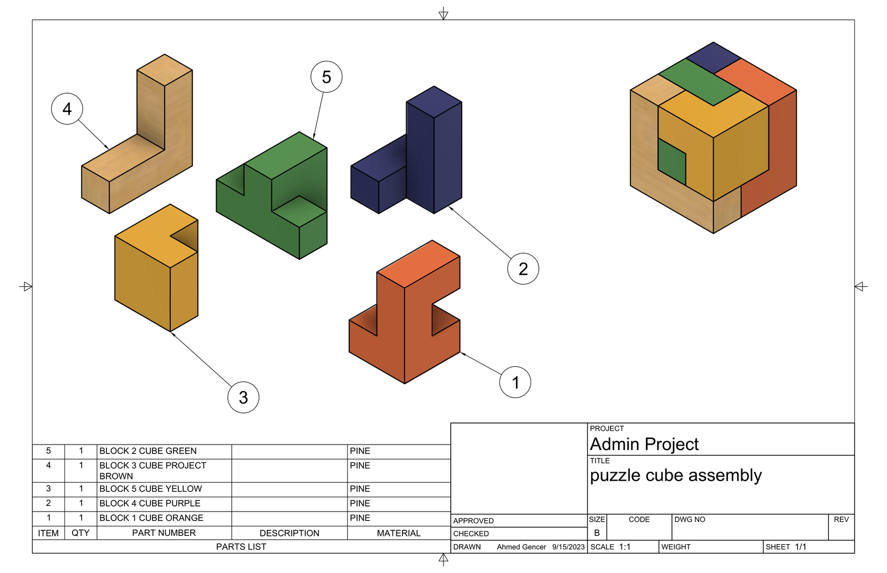
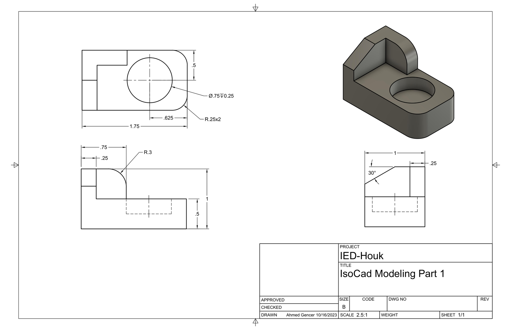
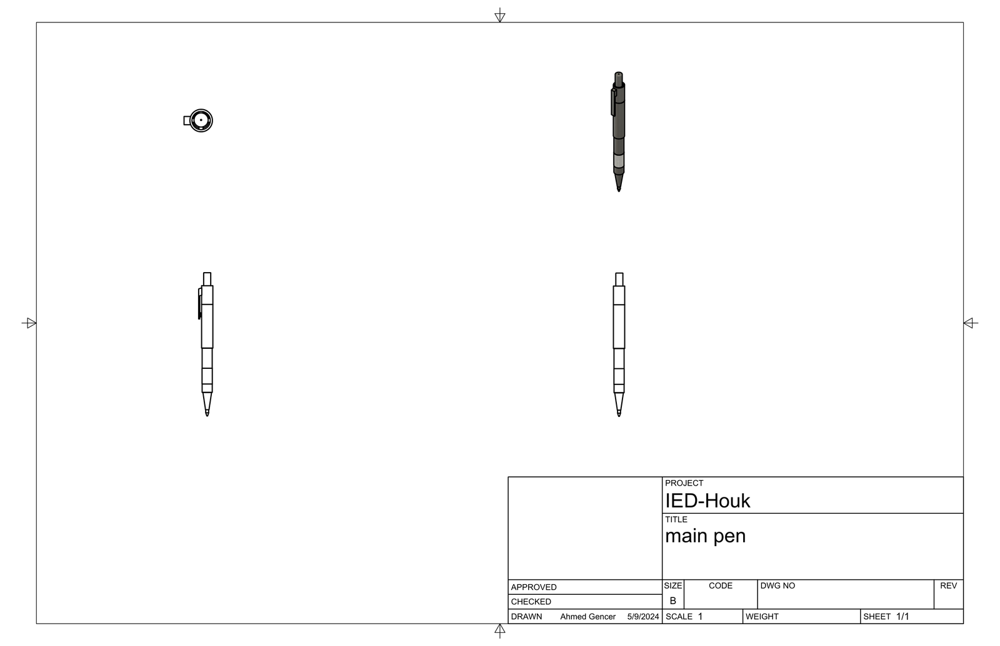
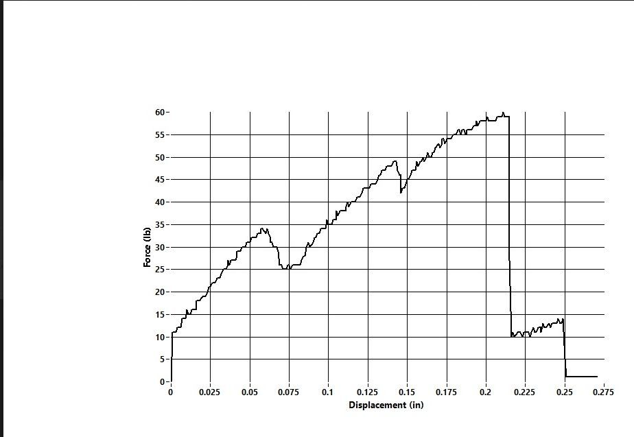
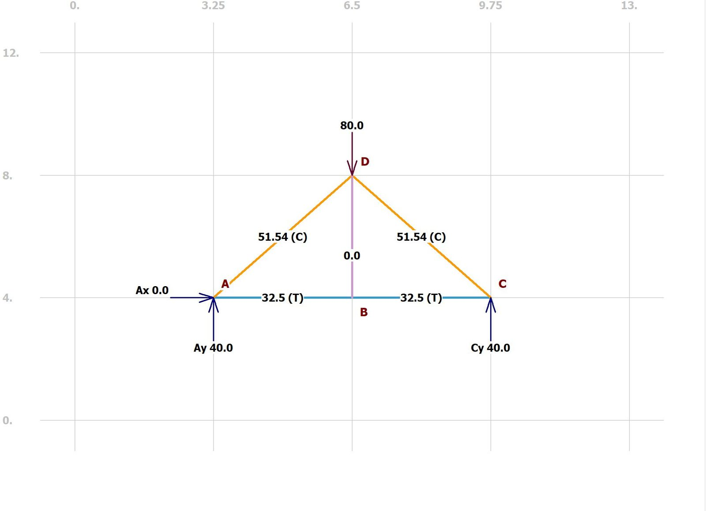
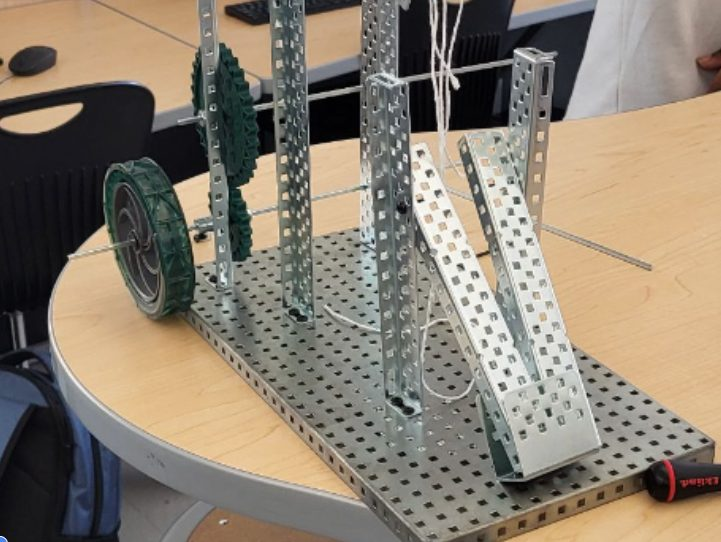

CAD & Mechanical
Fusion 360 parts, drawings, and assemblies from Introduction to Engineering Design, plus statics and mechanism builds from Principles of Engineering.
Automata
A box with four cams (pear, snail, eccentric, regular hexagon) on one axle. Turning the handle lifts each follower at a different time. I modeled every part, assembled them with joints, and animated the mechanism in Fusion 360 to check that each cam drove its follower.

Puzzle cube
Five pieces, each with at least 4 unit blocks, that fill a 3×3×3 cube and hold together but pull apart easily. I modeled each piece by treating the remaining empty space as the next piece's shape, checked the fit in Fusion 360, then built it from 1" wooden blocks.

Iso-shapes and pen reverse engineering
Three parts modeled exactly from dimensioned prints, each built from 2–3 simpler shapes. Separately, I took apart an unbranded pen, measured each part, and rebuilt it in Fusion 360.


Truss
A statically determinate popsicle-stick truss. I solved the member forces by hand, checked them in MDSolids, then loaded the truss to failure.
| Max load | Mass | Efficiency | Predicted failure | Actual failure |
|---|---|---|---|---|
| 60 lb | 3.96 g | 15.15 | Members AD, AB | Right-side members |
The failure point didn't match the analysis. I traced it to my gusset plates and cuts, not the design. Next time: cleaner cuts and better gussets.


Compound machine
A team of four combined at least five simple machines (lever, gear train, screw, inclined plane, wheel and axle) to lift 1 kg by 5 inches with a mechanical advantage between 5 and 15. I helped build most of the machine and kept communication going across the team.
